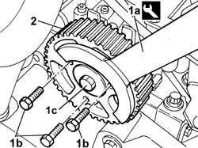
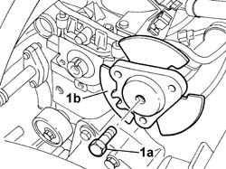

1036B50 FLYWHEEL ON CAMSHAFT - R.R.
- Path
- Procedures > 10 ENGINE UNIT > 1036 TIMING SYSTEM > 1036B OVERHEAD CAMSHAFT > 1036B50 FLYWHEEL ON CAMSHAFT - R.R.
- Kind
- repair procedure (removal / refitting; the operation number is the code)
- Applies to
- engines: 2.0 JTD 8V; all production periods
- Interactive page
- https://sloeber94.github.io/elrnDB-fDct/en/#/244000718
Applies to: engines: 2.0 JTD 8V; all production periods
 Removing
Removing
 Refitting
RefittingOp. 7055B54 UNDER-ENGINE GUARD - R R
Op. 4450B04 RIGHT FRONT WHEEL R R
Op. 1092G10 SINGLE ENGINE BELT R R
Op. 1092A10 CRANKSHAFT SERVICES PULLEY - R.R.
Op. 1032D12 TIMING SYSTEM PROTECTIVE COVER(S) - R + R
Op. 1032B10 TOOTHED TIMING BELT - R + R FOR TIMING ADJUSTMENT OR REPLACEMENT
1. Using the tool (1a), undo the bolts fixing the timing drive pulley (1b) and loosen the bolt (1c) fixing the flywheel underneath.
Description | Code | Function | |
|---|---|---|---|
1a | Counter-torque | 1.860.776.000 | Timing pulley lock |
2. Remove the toothed camshaft pulley

Applies to: engines: 2.0 JTD 8V; all production periods
1. Undo the bolt (1a) loosened previously and remove the flywheel (1b).

Applies to: engines: 2.0 JTD 8V; all production periods
Refitting
Removing- Fit the flywheel on the camshaft and tighten the fixing bolt.
- Fit the toothed timing drive pulley and screw in the fixing bolts without tightening them.
- Using the tool, stop the rotation of the toothed timing drive pulley and tighten the flywheel fixing bolt to torque.
Description | Code | Function | |
|---|---|---|---|
- | Counter-torque | 1.860.776.000 | Timing pulley lock |
Value - daNm | Fastening | Component | Ø | |
|---|---|---|---|---|
- | 4,3 | Bolt | TIMING PULLEY FLANGE | - |
Op. 1032B10 TOOTHED TIMING BELT - R + R FOR TIMING ADJUSTMENT OR REPLACEMENT
Op. 1032D12 TIMING SYSTEM PROTECTIVE COVER(S) - R + R
Op. 1092A10 CRANKSHAFT SERVICES PULLEY - R.R.
Op. 1092G10 SINGLE ENGINE BELT R R
Op. 4450B04 RIGHT FRONT WHEEL R R
Op. 7055B54 UNDER-ENGINE GUARD - R R
- Remove the vehicle from the lift.